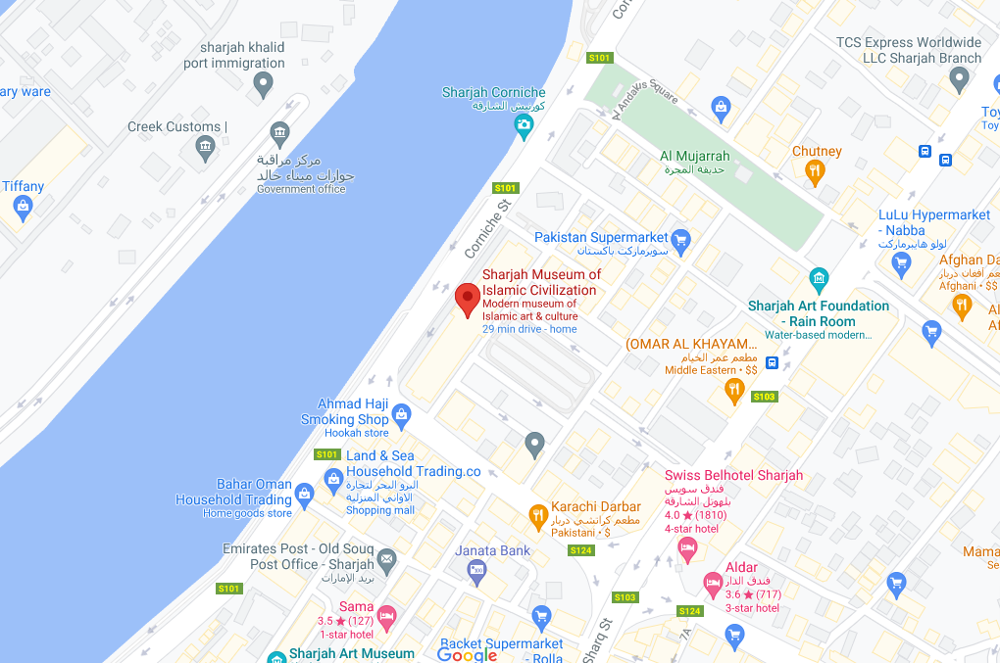
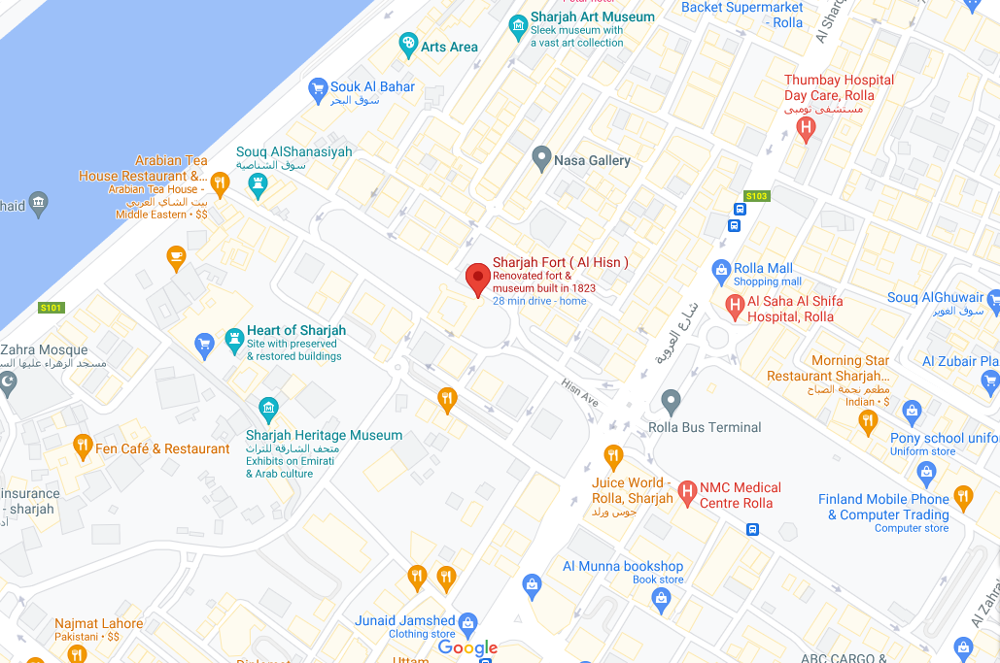
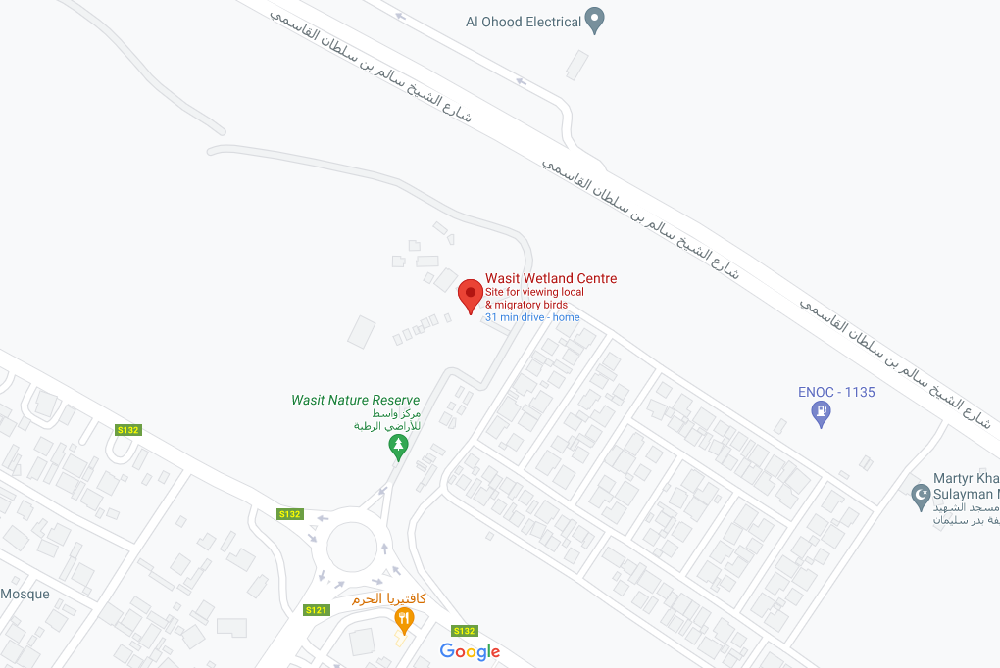

Welcome to Sharjah

Sharjah Museum of Islamic Civilization
Sharjah Fort
The Sharjah Museum of Islamic Civilization is a museum in Sharjah, United Arab Emirates. The museum, opened in 2008, covers Islamic culture, with more than 5,000 artifacts from the Islamic world. Objects include calligraphy, carvings, ceramic art|ceramics, coins, glass, manuscripts, metalwork, and scientific instruments. It was formerly known as the Islamic Museum and opened in 1996 before being moved and re-housed in the current building.
Sharjah Fort is a double story traditional rock, coral and adobe fortification in the centre of the city of Sharjah in the United Arab Emirates. The fort was originally constructed in 1820 by the then Ruler of Sharjah, Sheikh Sultan bin Saqr Al Qasimi. It was partially demolished in January 1970, the one remaining tower lending its name to the square in which it sits, 'Al Burj', Arabic for 'tower'.

Wasit Wetland Centre is a conservation area in Sharjah, United Arab Emirates. It preserves an area of a type of wetland once common along the western coastal plains of the UAE and consists of a visitor centre with viewing points to both captive and wild birds, as well as extensive areas of dunes, mud flats, salty lagoons and freshwater pools. Located in the northern Sharjah suburb of Wasit, the centre runs along the Sharjah/Ajman border. The centre comprises 86 hectares of protected habitat and has been designated as a Ramsar site since 2019.
